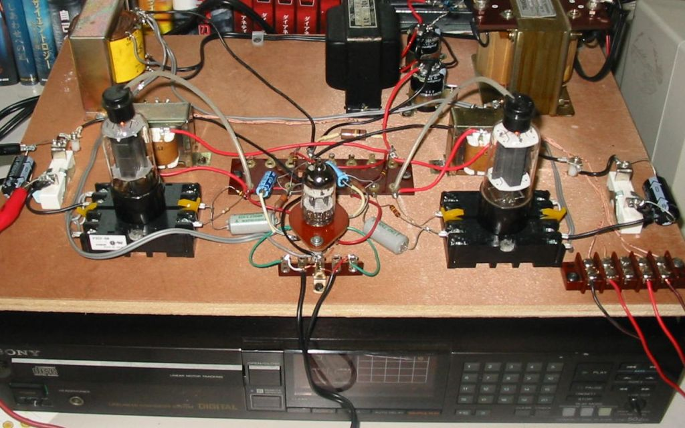
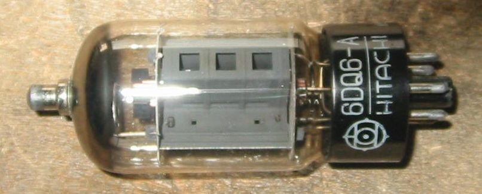
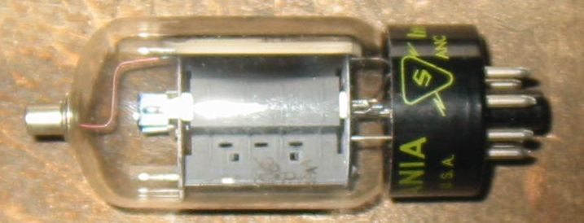
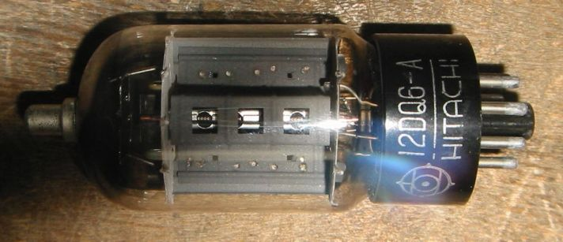
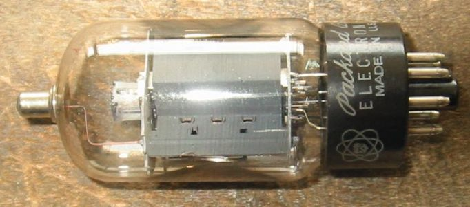
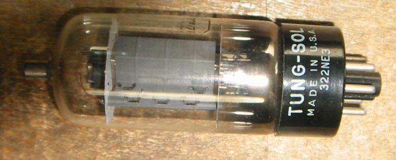

6DQ6との出会い
6DQ6をはじめて見たときには、私はすでにアマチュア無線を始めていて、その807と匹敵するくらいの
大きさに感激したものです。Cpgが大きいので、中和を取ったり面倒と思い、実験はしませんでした。
6DQ6シングル３結アンプの試作
水平出力管6DQ6もたくさんあるので、何とか活用できないがと考えていましたが、
サイズと容量が大きくなっただけで、6BQ6シングル３結アンプでそのまま動作します。
この球は6BQ6の構造ををそのまま1.5倍にしたという感じです。ピン接続も同じで差し替えただけで
そのまま動作しますが、それではつまらないのでカソードの抵抗を換えて、プレート損失を許容値の15W
まで持ってゆきます。この球の日本版が6GB7/12GB7です。
写真のアンプに挿してあるのは6BQ6GTBあたりだと思います。

2010年４月１記載
いろいろな6DQ6
HITACHI 6DQ6A

SYLVANIA 6DQ6B

HITACHI 12DQ6A

6DQ6と互換性のある6GW6

TUNG-SOL 12GC6 (6GC6の12V管)
Ef/If=12.6V/0.6A、Ep/Pp=770/17.5W、Esg/Psg=220/4.5W、Gm=6600、μ2=4.1

TV水平出力管(G/GT)のページに戻る